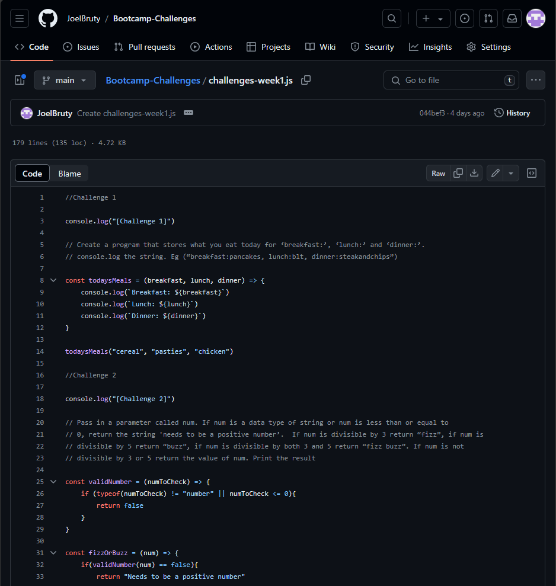

For the second week, we had a look at initialising a GitHub repository and committing our code to it, had a look at JavaScript Objects, then started with HTML, CSS and SQL databases
We had the first look at using GitHub Desktop to initialise a repository and committed our week 1 challenge code to it.
In the morning, we started with SQL. Using an online editor, we created a table, inserted values into it, and selected values to show.
In the afternoon, we had a recap of CVs from the previous employability session last week then continued to cover letters.
The task for the morning was to create a website to write journal entries to, which would be used to make notes of the work done as part of the bootcamp and be uploaded to our GitHub account via GitHub Pages.
We continued working with SQL, working at our own pace and completing the task set for the day, which was to create a table for game review accounts (storing the username, date of birth, number of games reviewed, etc.).
We had a look at using Codewars to help practice and improve our coding, and then in the afternoon at using Flexboxes in CSS to use for a navigation bar (this can be seen with the nav bars on the top and bottom of the pages).